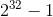

现代浏览器提供了一组与页面执行环境相关的信息，包括浏览器、操作系统、硬件和周边设备信息。这些属性可以通过暴露在window.navigator上的一组API获得。不过，这些API的跨浏览器支持还不够好，远未达到标准化的程度。
注意 强烈建议在使用这些API之前先检测它们是否存在，因为其中多数都不是强制性的，且很多浏览器没有支持。另外，本节介绍的特性有时候不一定可靠。
特性检测和用户代理字符串解析是当前常用的两种识别浏览器的方式。而navigator和screen对象也提供了关于页面所在软件环境的信息。
navigator.oscpu
navigator.oscpu属性是一个字符串，通常对应用户代理字符串中操作系统/系统架构相关信息。根据HTML实时标准：
oscpu属性的获取方法必须返回空字符串或者表示浏览器所在平台的字符串，比如"Windows NT 10.0; Win64; x64"或"Linux x86_64"。
比如，Windows 10上的Firefox的oscpu属性应该对应于以下加粗的部分：
console.log(navigator.useragent);
"mozilla/5.0 (windows nt 10.0; win64; x64; rv:58.0) gecko/20100101 firefox/58.0"
console.log(navigator.oscpu);
"windows nt 10.0; win64; x64"
navigator.vendor
navigator.vendor属性是一个字符串，通常包含浏览器开发商信息。返回这个字符串是浏览器navigator兼容模式的一个功能。根据HTML实时标准：
navigator.vendor返回一个空字符串，也可能返回字符串"Apple Computer, Inc."或字符串"Google Inc."。
例如，Chrome中的这个navigator.vendor属性返回下面的字符串：
console.log(navigator.vendor); // "google inc."
navigator.platform
navigator.platform属性是一个字符串，通常表示浏览器所在的操作系统。根据HTML实时标准：
navigator.platform必须返回一个字符串或表示浏览器所在平台的字符串，例如"MacIntel"、"Win32"、"FreeBSD i386"或"WebTV OS"。
例如，Windows系统下Chrome中的这个navigator.platform属性返回下面的字符串：
console.log(navigator.platform); // "win32"
screen.colorDepth和screen.pixelDepth
screen.colorDepth和screen.pixelDepth返回一样的值，即显示器每像素颜色的位深。根据CSS对象模型（CSSOM）规范：
screen.colorDepth和screen.pixelDepth属性应该返回输出设备中每像素用于显示颜色的位数，不包含alpha通道。
Chrome中这两个属性的值如下所示：
console.log(screen.colordepth); // 24
console.log(screen.pixeldepth); // 24
screen.orientation
screen.orientation属性返回一个ScreenOrientation对象，其中包含Screen Orientation API定义的屏幕信息。这里面最有意思的属性是angle和type，前者返回相对于默认状态下屏幕的角度，后者返回以下4种枚举值之一：
portrait-primary
portrait-secondary
landscape-primary
landscape-secondary
例如，在Chrome移动版中，screen.orientation返回的信息如下：
// 垂直看
console.log(screen.orientation.type); // portrait-primary
console.log(screen.orientation.angle); // 0
// 向左转
console.log(screen.orientation.type); // landscape-primary
console.log(screen.orientation.angle); // 90
// 向右转
console.log(screen.orientation.type); // landscape-secondary
console.log(screen.orientation.angle); // 270根据规范，这些值的初始化取决于浏览器和设备状态。因此，不能假设portrait-primary和0始终是初始值。这两个值主要用于确定设备旋转后浏览器的朝向变化。
navigator对象暴露出一些API，可以提供浏览器和操作系统的状态信息。
Geolocation API
navigator.geolocation属性暴露了Geolocation API，可以让浏览器脚本感知当前设备的地理位置。这个API只在安全执行环境（通过HTTPS获取的脚本）中可用。
这个API可以查询宿主系统并尽可能精确地返回设备的位置信息。根据宿主系统的硬件和配置，返回结果的精度可能不一样。手机GPS的坐标系统可能具有极高的精度，而IP地址的精度就要差很多。根据Geolocation API规范：
地理位置信息的主要来源是gps和ip地址、射频识别（rfid）、wi-fi及蓝牙mac地址、gsm/cdma蜂窝id以及用户输入等信息。注意 浏览器也可能会利用Google Location Service（Chrome和Firefox）等服务确定位置。有时候，你可能会发现自己并没有GPS，但浏览器给出的坐标却非常精确。浏览器会收集所有可用的无线网络，包括Wi-Fi和蜂窝信号。拿到这些信息后，再去查询网络数据库。这样就可以精确地报告出你的设备位置。
要获取浏览器当前的位置，可以使用getCurrentPosition()方法。这个方法返回一个Coordinates对象，其中包含的信息不一定完全依赖宿主系统的能力：
// getcurrentposition()会以position对象为参数调用传入的回调函数
navigator.geolocation.getcurrentposition((position) => p = position);这个position对象中有一个表示查询时间的时间戳，以及包含坐标信息的Coordinates对象：
console.log(p.timestamp); // 1525364883361
console.log(p.coords); // coordinates {...}
Coordinates对象中包含标准格式的经度和纬度，以及以米为单位的精度。精度同样以确定设备位置的机制来判定。
console.log(p.coords.latitude, p.coords.longitude); // 37.4854409, -122.2325506
console.log(p.coords.accuracy); // 58
Coordinates对象包含一个altitude（海拔高度）属性，是相对于1984世界大地坐标系（World Geodetic System，1984）地球表面的以米为单位的距离。此外也有一个altitudeAccuracy属性，这个精度值单位也是米。为了取得Coordinates中包含的这些信息，当前设备必须具备相应的能力（比如GPS或高度计）。很多设备因为没有能力测量高度，所以这两个值经常有一个或两个是空的。
console.log(p.coords.altitude); // -8.800000190734863
console.log(p.coords.altitudeaccuracy); // 200
Coordinates对象包含一个speed属性，表示设备每秒移动的速度。还有一个heading（朝向）属性，表示相对于正北方向移动的角度（0 ≤
heading
< 360）。为获取这些信息，当前设备必须具备相应的能力（比如加速计或指南针）。很多设备因为没有能力测量高度，所以这两个值经常有一个是空的，或者两个都是空的。
注意 设备不会根据两点的向量来测量速度和朝向。不过，如果可能的话，可以尝试基于两次连续的测量数据得到的向量来手动计算。当然，如果向量的精度不够，那么计算结果的精度肯定也不够。
获取浏览器地理位置并不能保证成功。因此getCurrentPosition()方法也接收失败回调函数作为第二个参数，这个函数会收到一个PositionError对象。在失败的情况下，PositionError对象中会包含一个code属性和一个message属性，后者包含对错误的简短描述。code属性是一个整数，表示以下3种错误。
PERMISSION_DENIED：浏览器未被允许访问设备位置。页面第一次尝试访问Geolocation API时，浏览器会弹出确认对话框取得用户授权（每个域分别获取）。如果返回了这个错误码，则要么是用户不同意授权，要么是在不安全的环境下访问了Geolocation API。message属性还会提供额外信息。POSITION_UNAVAILABLE：系统无法返回任何位置信息。这个错误码可能代表各种失败原因，但相对来说并不常见，因为只要设备能上网，就至少可以根据IP地址返回一个低精度的坐标。TIMEOUT：系统不能在超时时间内返回位置信息。关于如何配置超时，会在后面介绍。// 浏览器会弹出确认对话框请用户允许访问geolocation api
// 这个例子显示了用户拒绝之后的结果
navigator.geolocation.getcurrentposition(
() => {},
(e) => {
console.log(e.code); // 1
console.log(e.message); // user denied geolocation
}
);
// 这个例子展示了在不安全的上下文中执行代码的结果
navigator.geolocation.getcurrentposition(
() => {},
(e) => {
console.log(e.code); // 1
console.log(e.message); // only secure origins are allowed
}
);Geolocation API位置请求可以使用PositionOptions对象来配置，作为第三个参数提供。这个对象支持以下3个属性。
enableHighAccuracy：布尔值，true表示返回的值应该尽量精确，默认值为false。默认情况下，设备通常会选择最快、最省电的方式返回坐标。这通常意味着返回的是不够精确的坐标。比如，在移动设备上，默认位置查询通常只会采用Wi-Fi和蜂窝网络的定位信息。而在enableHighAccuracy为true的情况下，则会使用设备的GPS确定设备位置，并返回这些值的混合结果。使用GPS会更耗时、耗电，因此在使用enableHighAccuracy配置时要仔细权衡一下。timeout：毫秒，表示在以TIMEOUT状态调用错误回调函数之前等待的最长时间。默认值是0xFFFFFFFF（）。0表示完全跳过系统调用而立即以TIMEOUT调用错误回调函数。maximumAge：毫秒，表示返回坐标的最长有效期，默认值为0。因为查询设备位置会消耗资源，所以系统通常会缓存坐标并在下次返回缓存的值（遵从位置缓存失效策略）。系统会计算缓存期，如果Geolocation API请求的配置要求比缓存的结果更新，则系统会重新查询并返回值。0表示强制系统忽略缓存的值，每次都重新查询。而Infinity会阻止系统重新查询，只会返回缓存的值。JavaScript可以通过检查Position对象的timestamp属性值是否重复来判断返回的是不是缓存值。Connection State和NetworkInformation API
浏览器会跟踪网络连接状态并以两种方式暴露这些信息：连接事件和navigator.onLine属性。在设备连接到网络时，浏览器会记录这个事实并在window对象上触发online事件。相应地，当设备断开网络连接后，浏览器会在window对象上触发offline事件。任何时候，都可以通过navigator.onLine属性来确定浏览器的联网状态。这个属性返回一个布尔值，表示浏览器是否联网。
const connectionstatechange = () => console.log(navigator.online);
window.addeventlistener('online', connectionstatechange);
window.addeventlistener('offline', connectionstatechange);
// 设备联网时：
// true
// 设备断网时：
// false当然，到底怎么才算联网取决于浏览器与系统实现。有些浏览器可能会认为只要连接到局域网就算“在线”，而不管是否真正接入了互联网。
navigator对象还暴露了NetworkInformation API，可以通过navigator.connection属性使用。这个API提供了一些只读属性，并为连接属性变化事件处理程序定义了一个事件对象。
以下是NetworkInformation API暴露的属性。
downlink：整数，表示当前设备的带宽（以Mbit/s为单位），舍入到最接近的25kbit/s。这个值可能会根据历史网络吞吐量计算，也可能根据连接技术的能力来计算。downlinkMax：整数，表示当前设备最大的下行带宽（以Mbit/s为单位），根据网络的第一跳来确定。因为第一跳不一定反映端到端的网络速度，所以这个值只能用作粗略的上限值。effectiveType：字符串枚举值，表示连接速度和质量。这些值对应不同的蜂窝数据网络连接技术，但也用于分类无线网络。这个值有以下4种可能。slow-2g
2g
3g
4g
rtt：毫秒，表示当前网络实际的往返时间，舍入为最接近的25毫秒。这个值可能根据历史网络吞吐量计算，也可能根据连接技术的能力来计算。type：字符串枚举值，表示网络连接技术。这个值可能为下列值之一。bluetooth：蓝牙。cellular：蜂窝。ethernet：以太网。none：无网络连接。相当于navigator.onLine === false。mixed：多种网络混合。other：其他。unknown：不确定。wifi：Wi-Fi。wimax：WiMAX。saveData：布尔值，表示用户设备是否启用了“节流”（reduced data）模式。onchange：事件处理程序，会在任何连接状态变化时激发一个change事件。可以通过navigator.connection.addEventListener('change',changeHandler)或navigator.connection.onchange = changeHandler等方式使用。Battery Status API
浏览器可以访问设备电池及充电状态的信息。navigator.getBattery()方法会返回一个期约实例，解决为一个BatteryManager对象。
navigator.getbattery().then((b) => console.log(b));
// batterymanager { ... }
BatteryManager包含4个只读属性，提供了设备电池的相关信息。
charging：布尔值，表示设备当前是否正接入电源充电。如果设备没有电池，则返回true。chargingTime：整数，表示预计离电池充满还有多少秒。如果电池已充满或设备没有电池，则返回0。dischargingTime：整数，表示预计离电量耗尽还有多少秒。如果设备没有电池，则返回Infinity。level：浮点数，表示电量百分比。电量完全耗尽返回0.0，电池充满返回1.0。如果设备没有电池，则返回1.0。这个API还提供了4个事件属性，可用于设置在相应的电池事件发生时调用的回调函数。可以通过给BatteryManager添加事件监听器，也可以通过给事件属性赋值来使用这些属性。
onchargingchange
onchargingtimechange
ondischargingtimechange
onlevelchange
navigator.getbattery().then((battery) => {
// 添加充电状态变化时的处理程序
const chargingchangehandler = () => console.log('chargingchange');
battery.onchargingchange = chargingchangehandler;
// 或
battery.addeventlistener('chargingchange', chargingchangehandler);
// 添加充电时间变化时的处理程序
const chargingtimechangehandler = () => console.log('chargingtimechange');
battery.onchargingtimechange = chargingtimechangehandler;
// 或
battery.addeventlistener('chargingtimechange', chargingtimechangehandler);
// 添加放电时间变化时的处理程序
const dischargingtimechangehandler = () => console.log('dischargingtimechange');
battery.ondischargingtimechange = dischargingtimechangehandler;
// 或
battery.addeventlistener('dischargingtimechange', dischargingtimechangehandler);
// 添加电量百分比变化时的处理程序
const levelchangehandler = () => console.log('levelchange');
battery.onlevelchange = levelchangehandler;
// 或
battery.addeventlistener('levelchange', levelchangehandler);
});浏览器检测硬件的能力相当有限。不过，navigator对象还是通过一些属性提供了基本信息。
处理器核心数
navigator.hardwareConcurrency属性返回浏览器支持的逻辑处理器核心数量，包含表示核心数的一个整数值（如果核心数无法确定，这个值就是1）。关键在于，这个值表示浏览器可以并行执行的最大工作线程数量，不一定是实际的CPU核心数。
设备内存大小
navigator.deviceMemory属性返回设备大致的系统内存大小，包含单位为GB的浮点数（舍入为最接近的2的幂：512MB返回0.5，4GB返回4）。
最大触点数
navigator.maxTouchPoints属性返回触摸屏支持的最大关联触点数量，包含一个整数值。